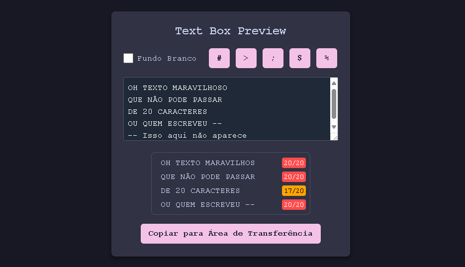

ByteOff V - participando como tester e tradutor¶
A experiência de participar QA e Tradutor de uma game jam para jogos de NES.
Todos os anos, a The New 8-bit Heroes, equipe que desenvolve o NESMaker (1), realiza a game jam entitulada ByteOff. Estamos na quinta edição. Diferente de muitas outras competições, esta tem uma maneira inusitada (e bem produzida) de revelar seus temas.
- O NESmaker é um software para PC que permite aos usuários criar novos jogos jogáveis em hardware, baseados em cartucho, para o Nintendo Entertainment System, em um ambiente de desenvolvimento moderno. Usuários sem experiência em programação podem começar a criar seus jogos dos sonhos para o NES sem escrever uma linha de código, enquanto usuários mais avançados podem usar a cadeia de ferramentas de desenvolvimento do NESmaker, chegando até a escrever motores inteiros do zero.
Neste ano, o tema foi "Find The Reason" (Encontre o motivo) e a razão de eu ter participado da maneira que participei foi por pura curiosidade sobre como é o processo testes e tradução.
Testes¶
Quando vi a rom do BackwardsQuest disponível para baixar e pronta para ser debugada, eu não resisti. Abri com o emulador FCEUX 2.6.6 (há quem use Mesen) e comecei a depenar o jogo.
Não demorou muito para encontrar, não um mas vários bugs. Já que estava tudo ao contrário, comecei contando os bugs de 999 e cheguei até a incrível marca de 966. Foram no total 17 versões até que o jogo ficasse "pronto".
Dentre os vários encontrados, o BUG 973 foi o que mais me diverti. Nele conseguimos escapar da matrix do jogo:

Foi muito divertido conseguir quebrar o jogo do Dale Coop, Artix, FJ e Raftonaut.
Desafio¶
O maior desafio de se reportar um bug é fazê-lo de uma forma que o outro consiga replicar. Uma explicação bem detalhada é boa, mas acompanhada de um vídeo ou um GIF fica melhor ainda. Utilizei O Screen to Gif, programa gratuito que permite você gravar sua tela, editar os quadros que foram gravados e por fim exportá-los para GIF.
Tradução¶
No meio do caminho, tive a ideia de também traduzir o jogo para português o que me custou algumas horas para organizar e mais horas (e copos de café) para colocar pra funcionar dentro do jogo.
A medida que eu ia jogando, ia anotando manualmente os textos em inglês e colocando numa planilha. No final da jogatina, traduzi tudo para português.
Criei uma estrutura simples para poder controlar se a tradução já havia sido colocada em jogo ou não que consiste nas seguintes colunas:
- Id: ordem em que o texto aparecia no jogo;
- Quem: qual era o falante;
- En: texto original em inglês;
- Pt-Br: texto traduzido para português;
- Tipo: a caixa de texto tem fundo ou não;
- Referência: referência dentro do NESMaker;
- Conferido: foi lido e conferido
- Status: se foi implementado ou se está pendente
| ID | Quem | EN | PT-BR | Tipo | Referência | Conferido | Status |
|---|---|---|---|---|---|---|---|
| 1 | GIRL | YOU KILLED THE KING! |
VOCE MATOU O REI! |
With BG | Text>34 | Yes | Ok |
Organizar dessa forma foi crucial, pois a referência do texto nem sempre segue a ordem de aparição dele no jogo, logo você pode filtrar por esse campo para poder ir atrás do texto dentro do banco de texto do NESMaker.
Para a criação do texto em si, utilizei uma ferramenta feita com inteligência artificial para o único propósito de me deixar visualizar se estou escrevendo além da conta:

Limitações¶
Na hora de traduzir, além da barreira linguística, haviam algumas limitações visto que o jogo não é inspirado em NES, mas feito para ser jogado no console infracitado. As principais limitações eram:
- Ausência de caracteres: acentuados (é, í, ã, etc) e cedilha;
- Limites da caixa de texto:
- Horizontal: onde só podia escrever até 18 caracteres;
- Vertical: onde só não podia escrever demais ou o jogo ia ficar repetindo o mesmo arquivo de diálogo